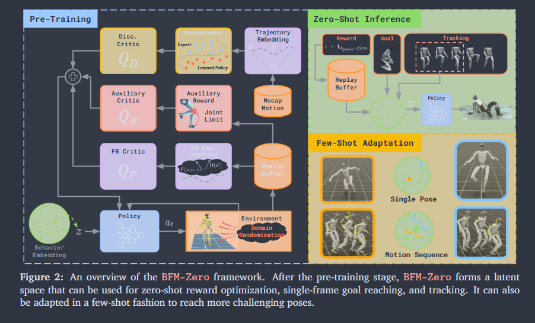
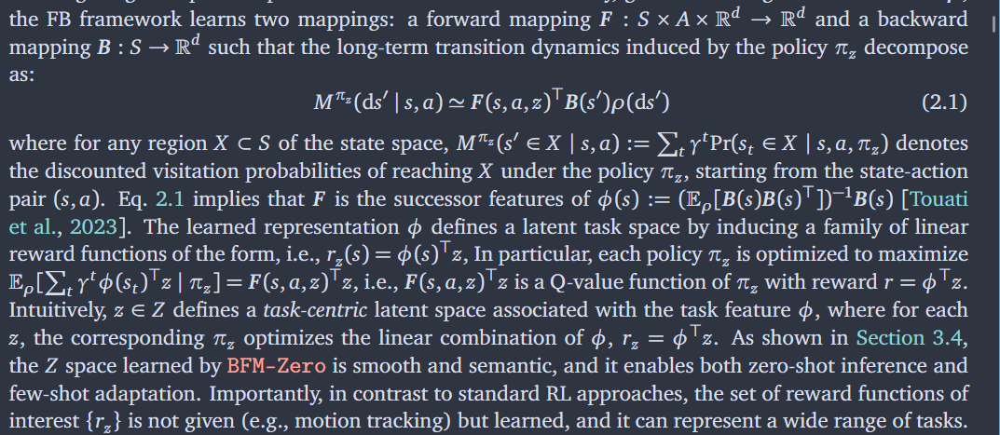
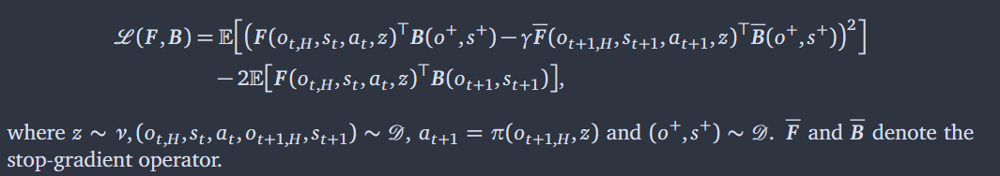
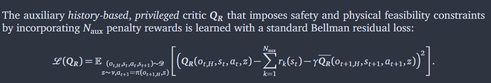
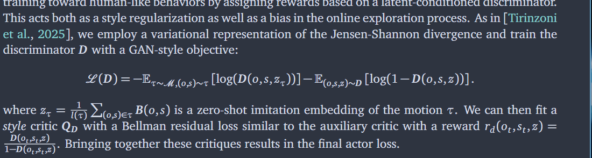
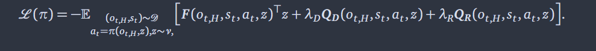
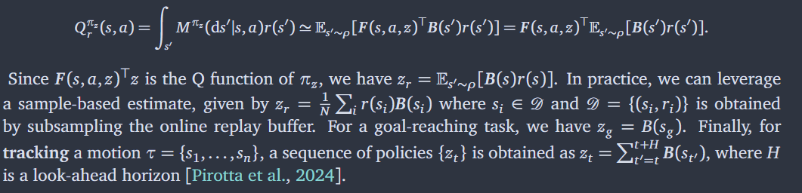
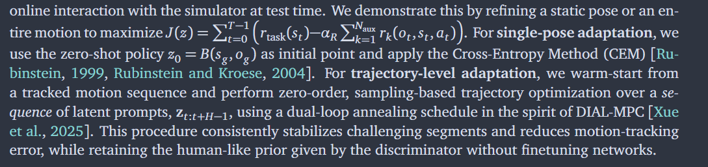
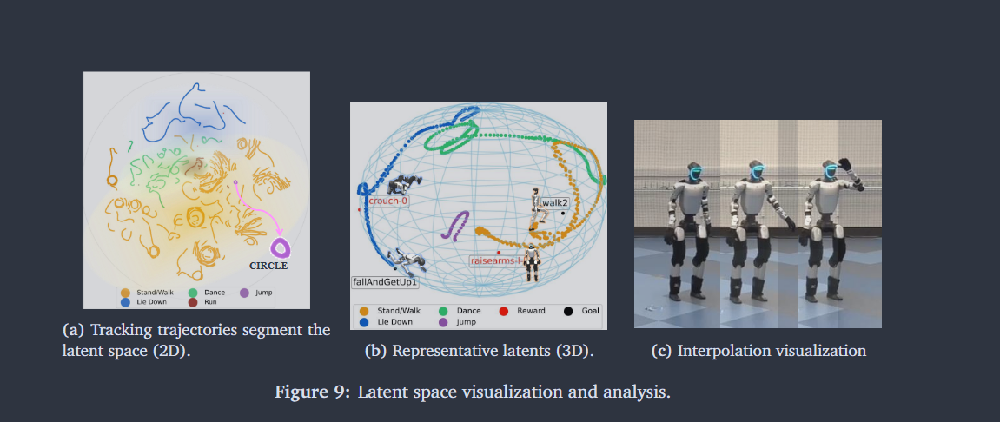

Source: Zotero note; match: first-page title.Open item in Zotero
BFM0 : Behavioral Foundation Models - 1. Shared Latent Representations (Motions, Goals, Rewards) 2. versatile and robust whole-body skills 3. Unsupervised RL and forward-backward model
Goal: Solve a wide range of downstream tasks specified by rewards, goals or demonstrations without retraining
Methods: Motion Capture, Domain Randomization
BMF0 for Humanoid Whole-Body Control

29-degree-of-freedom1.Unsupervised RL with Forward-Backward Representations
Pretraining phase - Online reward-free interactions in simulator + offline dataset of unlabeled behaviors
a. FB representations and FB-CPR - FB: finite-rank approximation of long-term policy dynamics, B: low-frequency features that best summarize long-range temporal dependencies between states

*Forward: 从目前的状态s和动作action并执行z(latent)之后对应的未来长期状态趋势是什么， Backward:未来状态s’大致的特征是什么
b. Pre-training for Humanoid Control
1）Asymmetric Training(sim2real gap) - Policy: Observation History, Critics: privileged information
2) Scaling up to Massively Parallel Environment
3) Domain Randomization - key physical parameters/ perturbations/ sensor noises - enhance robustness and adaptability
4) Reward Regularization - avoid undesirable behaviors
Off-policy actor-critic scheme
FB Objective:

Naux penalty reward for safety and physical feasibility constraints ( QR )

QD : Privileged discriminator critic

final actor loss

Inference ( Zero-shot ) reward

few-shot adaptation:

Latent Space Structure:
